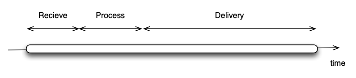
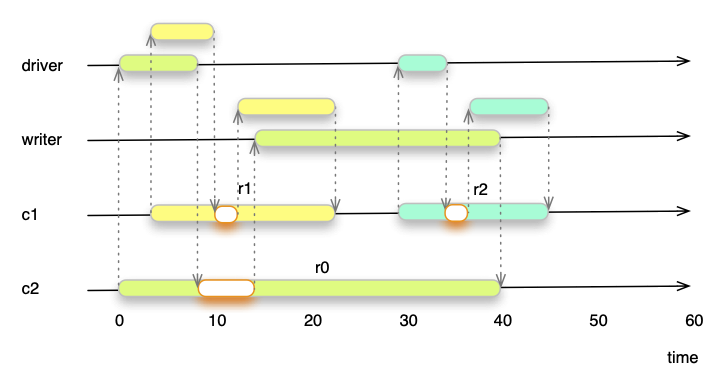
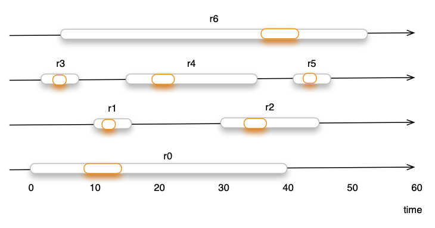

NaviServer Manual – 5.0.4
admin-tuning - NaviServer Tuning and Scaling Guide
NaviServer is designed for high scalability. It originally served as the core of web infrastructures supporting some of the most heavily visited environments in the world, such as AOL. The sections below discuss various configuration parameters and techniques that can help you optimize and scale your NaviServer deployment. For a complete reference, see the "sample-config.tcl" configuration file.
This section is especially relevant for sites requiring high throughput. Throughput refers to the number of requests handled in a given time interval. NaviServer scales by using a combination of event-driven I/O handling (spooling techniques) and connection worker threads which are responsible for the heavy lifting. The spooling threads can efficiently manage large numbers of concurrent requests with a relatively small number of lightweight threads.
NaviServer treats sending and receiving data over network connections as an I/O-driven process. The server’s event-driven model triggers actions based on the arrival of incoming data or the readiness of the kernel’s send queues. This approach assumes that I/O operations require relatively little CPU time, allowing a single thread to handle many concurrent connections. However, if a thread performs CPU-intensive operations or waits on locks, all requests managed by that thread are blocked as well for this time. This might not be acceptable for serving latency sensitive data such as live video streams via NaviServer.
While static page serving is mostly I/O bound, real-world web applications often perform CPU-intensive operations, such as database queries, middleware interactions, and legacy backend integrations. For example, NaviServer is known to handle up to 16,000 SQL queries per second on mid-range servers using OpenACS, illustrating the need to efficiently handle mixed I/O and CPU loads.
Processing an HTTP/HTTPS request happens in three phases:
Receive the request
Process the request (e.g., run scripts, queries, etc.)
Deliver the response

Figure 1: Request Phases Without spooling threads, all three phases tie up a single connection thread. This can become a bottleneck if, for example, a client is slow to receive data or large uploads are involved. Slow-read or slow-write attacks exploit this behavior by forcing the server to keep a connection thread occupied a long time.
NaviServer uses spooling threads to mitigate such bottlenecks:
driver threads accept requests
spooler threads handle large uploads during the receive phase, offloading this work from driver threads
writer threads manage response delivery to clients
Multiple of these spooling threads can be configured for each network driver (e.g., HTTP, HTTPS).
Figure 2 illustrates how three concurrent requests (r0, r1, r2) interact with spooling threads. By delegating I/O-intensive tasks to driver and writer threads, connection threads spend less time waiting and more time processing. This approach allows one connection thread to handle many more requests per second. Remember, every spooling thread is capable to server a high number of concurrent requests without latency degradation for the client. Only the process phases (marked in orange) occupy time in the connection thread.

Figure 2: Concurrent Request with Spooling Threads
Only the processing phase requires always a connection thread. By reducing the time required in the connection thread, the scalability improves, the same number of connection threads is able to process more requests. Figure 3 shows how six requests are served by four connection threads.

Figure 3: Concurrent Requests and Scalability
Actually, thanks to reduced processing time, these connection threads could serve much more requests. Without spooling threads, the server throughput is roughly:
(total requests/sec) ≈ (number of connection threads * (1 / avg total request time))
With spooling threads, the server throughput approximates:
(total requests/sec) ≈ (number of connection threads * (1 / avg process phase time))
Example:
Average total time per request: 25 ms
Average process-phase time per request: 4 ms
Without spooling:
Per thread: 1000ms/25ms = 40 requests/sec
With 4 connection threads: 160 requests/sec
With spooling:
Per thread: 1000ms/4ms = 250 requests/sec
With 4 connection threads: 1000 requests/sec
Actual figures depend on application complexity, database performance, network conditions, and more. Use the nsstats module to gather metrics and understand your environment better. For determining the right number of, e.g., the right number of connection threads, the nsstats module provides statistics for average queueing time, filter and run time, etc.
For smaller deployments (e.g., 100K requests/day), the default settings in "sample-config.tcl" or "openacs-config.tcl" are often sufficient. For larger or more resource-constrained setups, you may need to adjust parameters in the ns/server/$server section:
Key parameters include: connsperthread, highwatermark, lowwatermark, maxconnections, maxthreads, minthreads, rejectoverrun, retryafter, poolratelimit, connectionratelimit and threadtimeout. See also the section connection thread pools in the keywords section.
In most cases, the defaults work well, but minthreads and maxthreads need often tuning. Setting these parameters carefully based on load is essential. Frequent starting and stopping of threads can be costly if your application initializes large Tcl environments. Sometimes it’s best to set minthreads = maxthreads to avoid thread startup overhead.
maxconnections defines the length of the connection queue for a pool. If no connection thread is available, requests queue up. If the queue overflows and rejectoverrun is true, a 503 error is returned to the client. If retryafter is set, a "Retry-After" header field is also provided. When rejectoverrun is false, NaviServer retries requests more aggressively, which can consume memory if exploited by flooding attacks. For internal servers, this behavior may still be desirable.
On busy machines, define multiple connection thread pools and map certain HTTP methods, URLs, or context constraints to them. See the documentation of "connection thread pools" and the ns_server command for details. You can create additional pools via in the pools section in the configuration file and configure them separately.
ns_section ns/server/$server/pools {
#
# To activate connection thread pools, uncomment one of the
# following lines and/or add other pools.
ns_param monitor "Monitoring actions"
ns_param fast "Fast requests (e.g., <10ms)"
}
ns_section ns/server/$server/pool/monitor {
ns_param minthreads 2
ns_param maxthreads 2
ns_param map "GET /admin/nsstats"
ns_param map "GET /SYSTEM"
ns_param map "GET /ds"
ns_param map "POST /ds"
ns_param map "GET /request-monitor"
}
ns_section ns/server/$server/pool/fast {
ns_param minthreads 2
ns_param maxthreads 2
ns_param map "GET /*.png"
ns_param map "GET /*.PNG"
ns_param map "GET /*.jpg"
ns_param map "GET /*.pdf"
ns_param map "GET /*.gif"
ns_param map "GET /*.mp4"
ns_param map "GET /*.ts"
ns_param map "GET /*.m3u8"
}
ns_section ns/server/$server/pool/bots {
ns_param map "GET /* {user-agent *bot*}"
ns_param map "GET /* {user-agent *rawl*}"
ns_param map "GET /* {user-agent *pider*}"
ns_param map "GET /* {user-agent *baidu*}"
ns_param map "GET /* {user-agent *Knowledge*}"
ns_param minthreads 2
ns_param maxthreads 2
ns_param poolratelimit 1000 ;# 0; limit rate for pool to this amount (KB/s); 0 means unlimited
ns_param rejectoverrun true
}
Different pools can have distinct parameters, including limiting outgoing traffic rates per connection or for the entire pool.
Loading unnecessary modules can introduce overhead. For instance:
nsperm adds extra checks per request.
nscgi and nscp are not needed if you don’t run CGI or the control port.
The general rule is not to load modules not used by your application to reduce overhead.
Although NaviServer performs DNS caching, DNS lookups can slow down request handling, especially for failed lookups. By default, nslog performs no DNS lookups, but verify your configuration. If you’re not using host-based access controls with nsperm, disable DNS lookups there as well. For nscgi, DNS is off by default, but check for gethostbyaddr settings. If you must use DNS, tune dnscache, dnswaittimeout, and dnscachetimeout to improve performance.
In the ns/server/$server/adp section, parameters like cache, cachesize, and threadcache control the ADP cache. The default is a 10 MB cache, which stores parsed ADP pages in memory, reducing the need to re-parse on each request. Adjust these settings based on memory availability and application needs.
The FastPath cache stores static HTML pages. In ns/server/$server/fastpath, adjust cache, cachemaxentry, and cachemaxsize. Default is 10 MB. On some systems, enabling mmap can improve performance further.
If your site rarely updates its content, you can disable checkmodifiedsince in section ns/server/$server. This prevents NaviServer from checking file modification times on every cached entry, potentially boosting performance on slower systems.
Monitor memory usage with tools like "ps -leaf". Ideally, the Resident Set Size (RSS) of the nsd process should be large compared to its allocated size to avoid thrashing. Operating system policies or memory constraints can limit how much memory nsd can use efficiently.
The extra NaviServer module nsstats offers detailed memory analysis, including memory used for caching, nsv, or statistics from the system memory allocator, when, e.g., TCmalloc from Google's perftools is used.
Databases are often the main bottleneck of web applications. Streamline queries and use stored procedures to minimize round-trips and ensure only the required data is retrieved. Check the statistics such as sequential tuple scans and the like and optimize your database indices. This reduces the server’s overhead in assembling ns_getrow structures.
NaviServer’s built-in statistics system (e.g., via module nsstats) provides insight into caching behavior, Tcl interpreters, thread usage, and more. These metrics are invaluable for informed tuning and capacity planning.
Additional parameters may improve performance in certain contexts. For example, concurrent interpreter creation can now be enabled with Tcl 8.6+:
ns_section ns/parameters {
ns_param concurrentinterpcreate true ;# default: false
}
When this is activated, multiple threads containing Tcl interpreters can be created concurrently. In previous version, the interpereter creation had to be serialized to avoid crashes.
Check the sample configuration files for more hints: